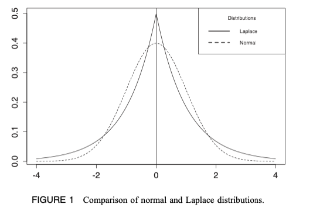
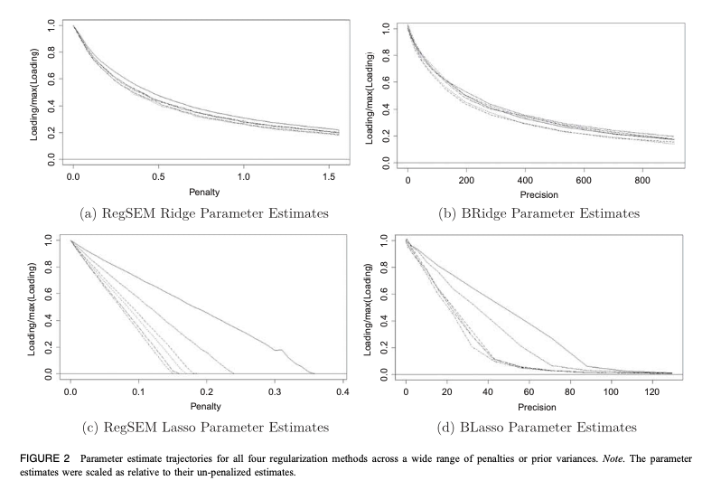
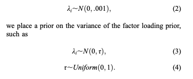
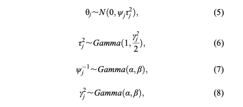
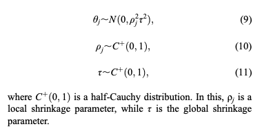
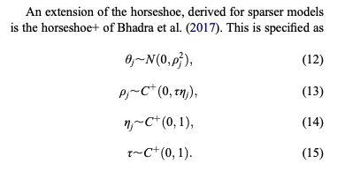

<!doctype html>
<html>
<head>
<meta charset='UTF-8'><meta name='viewport' content='width=device-width initial-scale=1'>
<title>[Sum]Comparison_of_Frequentist_and_Bayesian_Regularization</title><style type='text/css'>html {overflow-x: initial !important;}:root { --bg-color: #ffffff; --text-color: #333333; --select-text-bg-color: #B5D6FC; --select-text-font-color: auto; --monospace: "Lucida Console",Consolas,"Courier",monospace; }
html { font-size: 14px; background-color: var(--bg-color); color: var(--text-color); font-family: "Helvetica Neue", Helvetica, Arial, sans-serif; -webkit-font-smoothing: antialiased; }
body { margin: 0px; padding: 0px; height: auto; bottom: 0px; top: 0px; left: 0px; right: 0px; font-size: 1rem; line-height: 1.42857143; overflow-x: hidden; background-image: inherit; background-size: inherit; background-attachment: inherit; background-origin: inherit; background-clip: inherit; background-color: inherit; tab-size: 4; background-position: inherit inherit; background-repeat: inherit inherit; }
iframe { margin: auto; }
a.url { word-break: break-all; }
a:active, a:hover { outline: 0px; }
.in-text-selection, ::selection { text-shadow: none; background: var(--select-text-bg-color); color: var(--select-text-font-color); }
#write { margin: 0px auto; height: auto; width: inherit; word-break: normal; word-wrap: break-word; position: relative; white-space: normal; overflow-x: visible; padding-top: 40px; }
#write.first-line-indent p { text-indent: 2em; }
#write.first-line-indent li p, #write.first-line-indent p * { text-indent: 0px; }
#write.first-line-indent li { margin-left: 2em; }
.for-image #write { padding-left: 8px; padding-right: 8px; }
body.typora-export { padding-left: 30px; padding-right: 30px; }
.typora-export .footnote-line, .typora-export li, .typora-export p { white-space: pre-wrap; }
@media screen and (max-width: 500px) { 
  body.typora-export { padding-left: 0px; padding-right: 0px; }
  #write { padding-left: 20px; padding-right: 20px; }
  .CodeMirror-sizer { margin-left: 0px !important; }
  .CodeMirror-gutters { display: none !important; }
}
#write li > figure:last-child { margin-bottom: 0.5rem; }
#write ol, #write ul { position: relative; }
img { max-width: 100%; vertical-align: middle; image-orientation: from-image; }
button, input, select, textarea { color: inherit; font-family: inherit; font-size: inherit; font-style: inherit; font-variant-caps: inherit; font-weight: inherit; font-stretch: inherit; line-height: inherit; }
input[type="checkbox"], input[type="radio"] { line-height: normal; padding: 0px; }
*, ::after, ::before { box-sizing: border-box; }
#write h1, #write h2, #write h3, #write h4, #write h5, #write h6, #write p, #write pre { width: inherit; }
#write h1, #write h2, #write h3, #write h4, #write h5, #write h6, #write p { position: relative; }
p { line-height: inherit; }
h1, h2, h3, h4, h5, h6 { break-after: avoid-page; break-inside: avoid; orphans: 4; }
p { orphans: 4; }
h1 { font-size: 2rem; }
h2 { font-size: 1.8rem; }
h3 { font-size: 1.6rem; }
h4 { font-size: 1.4rem; }
h5 { font-size: 1.2rem; }
h6 { font-size: 1rem; }
.md-math-block, .md-rawblock, h1, h2, h3, h4, h5, h6, p { margin-top: 1rem; margin-bottom: 1rem; }
.hidden { display: none; }
.md-blockmeta { color: rgb(204, 204, 204); font-weight: 700; font-style: italic; }
a { cursor: pointer; }
sup.md-footnote { padding: 2px 4px; background-color: rgba(238, 238, 238, 0.7); color: rgb(85, 85, 85); border-top-left-radius: 4px; border-top-right-radius: 4px; border-bottom-right-radius: 4px; border-bottom-left-radius: 4px; cursor: pointer; }
sup.md-footnote a, sup.md-footnote a:hover { color: inherit; text-transform: inherit; text-decoration: inherit; }
#write input[type="checkbox"] { cursor: pointer; width: inherit; height: inherit; }
figure { overflow-x: auto; margin: 1.2em 0px; max-width: calc(100% + 16px); padding: 0px; }
figure > table { margin: 0px !important; }
tr { break-inside: avoid; break-after: auto; }
thead { display: table-header-group; }
table { border-collapse: collapse; border-spacing: 0px; width: 100%; overflow: auto; break-inside: auto; text-align: left; }
table.md-table td { min-width: 32px; }
.CodeMirror-gutters { border-right-width: 0px; background-color: inherit; }
.CodeMirror-linenumber { }
.CodeMirror { text-align: left; }
.CodeMirror-placeholder { opacity: 0.3; }
.CodeMirror pre { padding: 0px 4px; }
.CodeMirror-lines { padding: 0px; }
div.hr:focus { cursor: none; }
#write pre { white-space: pre-wrap; }
#write.fences-no-line-wrapping pre { white-space: pre; }
#write pre.ty-contain-cm { white-space: normal; }
.CodeMirror-gutters { margin-right: 4px; }
.md-fences { font-size: 0.9rem; display: block; break-inside: avoid; text-align: left; overflow: visible; white-space: pre; background-image: inherit; background-size: inherit; background-attachment: inherit; background-origin: inherit; background-clip: inherit; background-color: inherit; position: relative !important; background-position: inherit inherit; background-repeat: inherit inherit; }
.md-diagram-panel { width: 100%; margin-top: 10px; text-align: center; padding-top: 0px; padding-bottom: 8px; overflow-x: auto; }
#write .md-fences.mock-cm { white-space: pre-wrap; }
.md-fences.md-fences-with-lineno { padding-left: 0px; }
#write.fences-no-line-wrapping .md-fences.mock-cm { white-space: pre; overflow-x: auto; }
.md-fences.mock-cm.md-fences-with-lineno { padding-left: 8px; }
.CodeMirror-line, twitterwidget { break-inside: avoid; }
.footnotes { opacity: 0.8; font-size: 0.9rem; margin-top: 1em; margin-bottom: 1em; }
.footnotes + .footnotes { margin-top: 0px; }
.md-reset { margin: 0px; padding: 0px; border: 0px; outline: 0px; vertical-align: top; text-decoration: none; text-shadow: none; float: none; position: static; width: auto; height: auto; white-space: nowrap; cursor: inherit; line-height: normal; font-weight: 400; text-align: left; box-sizing: content-box; direction: ltr; background-position: 0px 0px; background-repeat: initial initial; }
li div { padding-top: 0px; }
blockquote { margin: 1rem 0px; }
li .mathjax-block, li p { margin: 0.5rem 0px; }
li { margin: 0px; position: relative; }
blockquote > :last-child { margin-bottom: 0px; }
blockquote > :first-child, li > :first-child { margin-top: 0px; }
.footnotes-area { color: rgb(136, 136, 136); margin-top: 0.714rem; padding-bottom: 0.143rem; white-space: normal; }
#write .footnote-line { white-space: pre-wrap; }
@media print { 
  body, html { border: 1px solid transparent; height: 99%; break-after: avoid; break-before: avoid; font-variant-ligatures: no-common-ligatures; }
  #write { margin-top: 0px; padding-top: 0px; border-color: transparent !important; }
  .typora-export * { -webkit-print-color-adjust: exact; }
  html.blink-to-pdf { font-size: 13px; }
  .typora-export #write { padding-left: 32px; padding-right: 32px; padding-bottom: 0px; break-after: avoid; }
  .typora-export #write::after { height: 0px; }
}
.footnote-line { margin-top: 0.714em; font-size: 0.7em; }
a img, img a { cursor: pointer; }
pre.md-meta-block { font-size: 0.8rem; min-height: 0.8rem; white-space: pre-wrap; background-color: rgb(204, 204, 204); display: block; overflow-x: hidden; background-position: initial initial; background-repeat: initial initial; }
p > .md-image:only-child:not(.md-img-error) img, p > img:only-child { display: block; margin: auto; }
#write.first-line-indent p > .md-image:only-child:not(.md-img-error) img { left: -2em; position: relative; }
p > .md-image:only-child { display: inline-block; width: 100%; }
#write .MathJax_Display { margin: 0.8em 0px 0px; }
.md-math-block { width: 100%; }
.md-math-block:not(:empty)::after { display: none; }
[contenteditable="true"]:active, [contenteditable="true"]:focus, [contenteditable="false"]:active, [contenteditable="false"]:focus { outline: 0px; box-shadow: none; }
.md-task-list-item { position: relative; list-style-type: none; }
.task-list-item.md-task-list-item { padding-left: 0px; }
.md-task-list-item > input { position: absolute; top: 0px; left: 0px; margin-left: -1.2em; margin-top: calc(1em - 10px); border: none; }
.math { font-size: 1rem; }
.md-toc { min-height: 3.58rem; position: relative; font-size: 0.9rem; border-top-left-radius: 10px; border-top-right-radius: 10px; border-bottom-right-radius: 10px; border-bottom-left-radius: 10px; }
.md-toc-content { position: relative; margin-left: 0px; }
.md-toc-content::after, .md-toc::after { display: none; }
.md-toc-item { display: block; color: rgb(65, 131, 196); }
.md-toc-item a { text-decoration: none; }
.md-toc-inner:hover { text-decoration: underline; }
.md-toc-inner { display: inline-block; cursor: pointer; }
.md-toc-h1 .md-toc-inner { margin-left: 0px; font-weight: 700; }
.md-toc-h2 .md-toc-inner { margin-left: 2em; }
.md-toc-h3 .md-toc-inner { margin-left: 4em; }
.md-toc-h4 .md-toc-inner { margin-left: 6em; }
.md-toc-h5 .md-toc-inner { margin-left: 8em; }
.md-toc-h6 .md-toc-inner { margin-left: 10em; }
@media screen and (max-width: 48em) { 
  .md-toc-h3 .md-toc-inner { margin-left: 3.5em; }
  .md-toc-h4 .md-toc-inner { margin-left: 5em; }
  .md-toc-h5 .md-toc-inner { margin-left: 6.5em; }
  .md-toc-h6 .md-toc-inner { margin-left: 8em; }
}
a.md-toc-inner { font-size: inherit; font-style: inherit; font-weight: inherit; line-height: inherit; }
.footnote-line a:not(.reversefootnote) { color: inherit; }
.md-attr { display: none; }
.md-fn-count::after { content: "."; }
code, pre, samp, tt { font-family: var(--monospace); }
kbd { margin: 0px 0.1em; padding: 0.1em 0.6em; font-size: 0.8em; color: rgb(36, 39, 41); background-color: rgb(255, 255, 255); border: 1px solid rgb(173, 179, 185); border-top-left-radius: 3px; border-top-right-radius: 3px; border-bottom-right-radius: 3px; border-bottom-left-radius: 3px; box-shadow: rgba(12, 13, 14, 0.2) 0px 1px 0px, rgb(255, 255, 255) 0px 0px 0px 2px inset; white-space: nowrap; vertical-align: middle; background-position: initial initial; background-repeat: initial initial; }
.md-comment { color: rgb(162, 127, 3); opacity: 0.8; font-family: var(--monospace); }
code { text-align: left; }
a.md-print-anchor { white-space: pre !important; border: none !important; display: inline-block !important; position: absolute !important; width: 1px !important; right: 0px !important; outline: 0px !important; text-shadow: initial !important; background-position: 0px 0px !important; background-repeat: initial initial !important; }
.md-inline-math .MathJax_SVG .noError { display: none !important; }
.html-for-mac .inline-math-svg .MathJax_SVG { vertical-align: 0.2px; }
.md-math-block .MathJax_SVG_Display { text-align: center; margin: 0px; position: relative; text-indent: 0px; max-width: none; max-height: none; min-height: 0px; min-width: 100%; width: auto; overflow-y: hidden; display: block !important; }
.MathJax_SVG_Display, .md-inline-math .MathJax_SVG_Display { width: auto; margin: inherit; display: inline-block !important; }
.MathJax_SVG .MJX-monospace { font-family: var(--monospace); }
.MathJax_SVG .MJX-sans-serif { font-family: sans-serif; }
.MathJax_SVG { display: inline; font-style: normal; font-weight: 400; line-height: normal; zoom: 90%; text-indent: 0px; text-align: left; text-transform: none; letter-spacing: normal; word-spacing: normal; word-wrap: normal; white-space: nowrap; float: none; direction: ltr; max-width: none; max-height: none; min-width: 0px; min-height: 0px; border: 0px; padding: 0px; margin: 0px; }
.MathJax_SVG * { transition: none; }
.MathJax_SVG_Display svg { vertical-align: middle !important; margin-bottom: 0px !important; margin-top: 0px !important; }
.os-windows.monocolor-emoji .md-emoji { font-family: "Segoe UI Symbol", sans-serif; }
.md-diagram-panel > svg { max-width: 100%; }
[lang="flow"] svg, [lang="mermaid"] svg { max-width: 100%; height: auto; }
[lang="mermaid"] .node text { font-size: 1rem; }
table tr th { border-bottom-width: 0px; }
video { max-width: 100%; display: block; margin: 0px auto; }
iframe { max-width: 100%; width: 100%; border: none; }
.highlight td, .highlight tr { border: 0px; }
svg[id^="mermaidChart"] { line-height: 1em; }
mark { background-color: rgb(255, 255, 0); color: rgb(0, 0, 0); background-position: initial initial; background-repeat: initial initial; }
.md-html-inline .md-plain, .md-html-inline strong, mark .md-inline-math, mark strong { color: inherit; }
mark .md-meta { color: rgb(0, 0, 0); opacity: 0.3 !important; }


html {
	font-size: 19px;
}

html, body {
	margin: auto;
	background: #fefefe;
}
body {
	font-family: "Vollkorn", Palatino, Times;
	color: #333;
	line-height: 1.4;
	text-align: justify;
}

#write {
	max-width: 960px;
	margin: 0 auto;
	margin-bottom: 2em;
	line-height: 1.53;
	padding-top: 40px;
}

@media only screen and (min-width: 1400px) {
	#write {
		max-width: 1100px;
	}
}

/* Typography
-------------------------------------------------------- */

#write>h1:first-child,
h1 {
	margin-top: 1.6em;
	font-weight: normal;
}

h1 {
	font-size:3em;
}

h2 {
	margin-top:2em;
	font-weight: normal;
}

h3 {
	font-weight: normal;
	font-style: italic;
	margin-top: 3em;
}

h1, 
h2, 
h3{
	text-align: center;
}

h2:after{
	border-bottom: 1px solid #2f2f2f;
    content: '';
    width: 100px;
    display: block;
    margin: 0 auto;
    height: 1px;
}

h1+h2, h2+h3 {
	margin-top: 0.83em;
}

p,
.mathjax-block {
	margin-top: 0;
	-webkit-hypens: auto;
	-moz-hypens: auto;
	hyphens: auto;
}
ul {
	list-style: square;
	padding-left: 1.2em;
}
ol {
	padding-left: 1.2em;
}
blockquote {
	margin-left: 1em;
	padding-left: 1em;
	border-left: 1px solid #ddd;
}
code,
pre {
	font-family: "Consolas", "Menlo", "Monaco", monospace, serif;
	font-size: .9em;
	background: white;
}
.md-fences{
	margin-left: 1em;
	padding-left: 1em;
	border: 1px solid #ddd;
	padding-bottom: 8px;
	padding-top: 6px;
	margin-bottom: 1.5em;
}

a {
	color: #2484c1;
	text-decoration: none;
}
a:hover {
	text-decoration: underline;
}
a img {
	border: none;
}
h1 a,
h1 a:hover {
	color: #333;
	text-decoration: none;
}
hr {
	color: #ddd;
	height: 1px;
	margin: 2em 0;
	border-top: solid 1px #ddd;
	border-bottom: none;
	border-left: 0;
	border-right: 0;
}
.ty-table-edit {
	background: #ededed;
    padding-top: 4px;
}
table {
	margin-bottom: 1.333333rem
}
table th,
table td {
	padding: 8px;
	line-height: 1.333333rem;
	vertical-align: top;
	border-top: 1px solid #ddd
}
table th {
	font-weight: bold
}
table thead th {
	vertical-align: bottom
}
table caption+thead tr:first-child th,
table caption+thead tr:first-child td,
table colgroup+thead tr:first-child th,
table colgroup+thead tr:first-child td,
table thead:first-child tr:first-child th,
table thead:first-child tr:first-child td {
	border-top: 0
}
table tbody+tbody {
	border-top: 2px solid #ddd
}

.task-list{
	padding:0;
}

.md-task-list-item {
	padding-left: 1.6rem;
}

.md-task-list-item > input:before {
	content: '\221A';
	display: inline-block;
	width: 1.33333333rem;
  	height: 1.6rem;
	vertical-align: middle;
	text-align: center;
	color: #ddd;
	background-color: #fefefe;
}

.md-task-list-item > input:checked:before,
.md-task-list-item > input[checked]:before{
	color: inherit;
}
.md-tag {
	color: inherit;
	font: inherit;
}
#write pre.md-meta-block {
	min-height: 35px;
	padding: 0.5em 1em;
}
#write pre.md-meta-block {
	white-space: pre;
	background: #f8f8f8;
	border: 0px;
	color: #999;
	
	width: 100vw;
	max-width: calc(100% + 60px);
	margin-left: -30px;
	border-left: 30px #f8f8f8 solid;
	border-right: 30px #f8f8f8 solid;

	margin-bottom: 2em;
	margin-top: -1.3333333333333rem;
	padding-top: 26px;
	padding-bottom: 10px;
	line-height: 1.8em;
	font-size: 0.9em;
	font-size: 0.76em;
	padding-left: 0;
}
.md-img-error.md-image>.md-meta{
	vertical-align: bottom;
}
#write>h5.md-focus:before {
	top: 2px;
}

.md-toc {
	margin-top: 40px;
}

.md-toc-content {
	padding-bottom: 20px;
}

.outline-expander:before {
	color: inherit;
	font-size: 14px;
	top: auto;
	content: "\f0da";
	font-family: FontAwesome;
}

.outline-expander:hover:before,
.outline-item-open>.outline-item>.outline-expander:before {
  	content: "\f0d7";
}

/** source code mode */
#typora-source {
	font-family: Courier, monospace;
    color: #6A6A6A;
}

.html-for-mac #typora-sidebar {
    -webkit-box-shadow: 0 6px 12px rgba(0, 0, 0, .175);
    box-shadow: 0 6px 12px rgba(0, 0, 0, .175);
}

.cm-s-typora-default .cm-header, 
.cm-s-typora-default .cm-property,
.CodeMirror.cm-s-typora-default div.CodeMirror-cursor {
	color: #428bca;
}

.cm-s-typora-default .cm-atom, .cm-s-typora-default .cm-number {
	color: #777777;
}

.typora-node .file-list-item-parent-loc, 
.typora-node .file-list-item-time, 
.typora-node .file-list-item-summary {
	font-family: arial, sans-serif;
}

.md-task-list-item>input {
    margin-left: -1.3em;
    margin-top: calc(1rem - 12px);
}

.md-mathjax-midline {
	background: #fafafa;
}

.md-fences .code-tooltip {
	bottom: -2em !important;
}

.dropdown-menu .divider {
	border-color: #e5e5e5;
}


</style>
</head>
<body class='typora-export' >
<div  id='write'  class = 'is-mac'><h1><a name="comparison-of-frequentist-and-bayesian-regularization-in-structural-equation-modeling" class="md-header-anchor"></a><span>Comparison of Frequentist and Bayesian Regularization in Structural Equation Modeling</span></h1><p><span>Jacobucci, R., &amp; Grimm, K. J. (2018). Comparison of frequentist and Bayesian regularization in structural equation modeling. </span><em><span>Structural Equation Modeling: A Multidisciplinary Journal, 25</span></em><span>, 639–649. DOI: </span><a href='https://doi.org/10.1080/10705511.2017.1410822'><span>10.1080/10705511.2017.1410822</span></a></p><div class='md-toc' mdtype='toc'><p class="md-toc-content" role="list"><span role="listitem" class="md-toc-item md-toc-h1" data-ref="n0"><a class="md-toc-inner" href="#comparison-of-frequentist-and-bayesian-regularization-in-structural-equation-modeling">Comparison of Frequentist and Bayesian Regularization in Structural Equation Modeling</a></span><span role="listitem" class="md-toc-item md-toc-h2" data-ref="n4"><a class="md-toc-inner" href="#purpose">Purpose</a></span><span role="listitem" class="md-toc-item md-toc-h3" data-ref="n9"><a class="md-toc-inner" href="#comparison-between-ridge-and-lasso">Comparison between ridge and lasso</a></span><span role="listitem" class="md-toc-item md-toc-h2" data-ref="n18"><a class="md-toc-inner" href="#ridge">Ridge</a></span><span role="listitem" class="md-toc-item md-toc-h2" data-ref="n27"><a class="md-toc-inner" href="#lasso">Lasso</a></span><span role="listitem" class="md-toc-item md-toc-h2" data-ref="n36"><a class="md-toc-inner" href="#other-methods">Other Methods</a></span><span role="listitem" class="md-toc-item md-toc-h3" data-ref="n41"><a class="md-toc-inner" href="#hierarchical-models">Hierarchical Models</a></span><span role="listitem" class="md-toc-item md-toc-h3" data-ref="n44"><a class="md-toc-inner" href="#alasso">alasso</a></span><span role="listitem" class="md-toc-item md-toc-h3" data-ref="n48"><a class="md-toc-inner" href="#horseshoe-and-horseshoe">horseshoe and horseshoe+</a></span><span role="listitem" class="md-toc-item md-toc-h3" data-ref="n54"><a class="md-toc-inner" href="#example">Example</a></span><span role="listitem" class="md-toc-item md-toc-h2" data-ref="n58"><a class="md-toc-inner" href="#software">Software</a></span><span role="listitem" class="md-toc-item md-toc-h2" data-ref="n61"><a class="md-toc-inner" href="#discussion">Discussion</a></span><span role="listitem" class="md-toc-item md-toc-h2" data-ref="n64"><a class="md-toc-inner" href="#my-thoughts">My Thoughts</a></span></p></div><h2><a name="purpose" class="md-header-anchor"></a><span>Purpose</span></h2><p><span>Purpose: demonstrating both similarity and distinction across estimation frameworks, while specifically highlighting more recent developments in Bayesian regularization.</span></p><p><span>1 first start with the use of small-variance priors in Mplus, and how this is equivalent to the use of ridge regularization. </span></p><p><span>2 demonstrate difference across both frequentist and Bayesian estimation in the case of the lasso.</span></p><p><span>3 extend this demonstration to more complex methods, spe- cifically a number of more recent hierarchical Bayesian methods: the Bayesian adaptive lasso (Feng et al., 2017) and the horseshoe prior</span></p><h3><a name="comparison-between-ridge-and-lasso" class="md-header-anchor"></a><span>Comparison between ridge and lasso</span></h3><p><span>&quot;The lasso penalty shrinks parameters by a constant amount, driving certain parameter estimates to zero, whereas the ridge penalty shrinks estimates proportionally. The ridge penalty helps stabilize parameter estimates, particularly if multi-collinearity is present, but does not drive estimates to zero. This makes lasso regularization more attractive when model simplification is desired.&quot;</span></p><p></p><p>&nbsp;</p><p><span>Asymmetric parameters: loadings, regression coefficients</span></p><p><span>Symmetric parameters: variances, covariances</span></p><p>&nbsp;</p><p><strong><span>Huang, P.-H., Chen, H., &amp; Weng, L.-J. (2017). A penalized likelihood method for structural equation modeling. </span><em><span>Psychometrika, 82</span></em><span>(2), 329– 354. doi:10.1007/s11336-017-9566-9</span></strong></p><p><strong><span>Jacobucci, R., &amp; Grimm, K. J. (2018). Regularized estimation of multi-variate latent change score models. In E. Ferrer, S. Boker, &amp; K. J. Grimm (Eds.), </span><em><span>Advances in Longitudinal Models for Multivariate Psychology: A Festschrift for Jack McArdle.</span></em><span> Routledge, London.</span></strong></p><h2><a name="ridge" class="md-header-anchor"></a><span>Ridge</span></h2><p><span>Example data: six items and one factor, three loadings were strong and the other three indicators are generally thought to be the result of an additional factor</span></p><p><span>estimate loadings with ridge regularization </span></p><p>&nbsp;</p><p><span>To show correspondence, asserting a conversion from prior variance to value of λ is not as important as a demonstration that the parameter estimates are shrunken at parallel rates as the prior variance is constrained </span></p><p><span>Model comparison: ML, Bayesian ridge: N(0,0.01), N(0,0.005), Frequentist ridge: lambda = 0.17, 0.34;   BIC</span></p><p><span>Model fit does not improve with the use of small-variance priors, this is mainly due to the number of parameters remaining consis- tent in the calculation of the Bayesian information criterion (BIC; Schwarz, 1978).</span></p><p><span>Results of the Bayesian ridge and frequentist ridge were almost same.</span></p><p>&nbsp;</p><h2><a name="lasso" class="md-header-anchor"></a><span>Lasso</span></h2><p><span>a set of 30 penalties or small-variance priors were tested on the same one factor model with all six factor loadings penalized</span></p><p>&nbsp;</p><p><span>Bayesian models were estimated using the blavaan package (Merkle &amp; Rosseel, 2015), which inter- faces JAGS (Plummer, 2003) in R. Normal distribution priors were used for BRidge, and Laplace distribution priors were used for BSEM lasso (BLasso). </span></p><p>&nbsp;</p><p><span>in RegSEM lasso the parameter estimates are driven to zero, whereas in BLasso estimates are driven to near zero, without estimates actually reaching zero. </span><strong><span>This finding agrees with Park and Casella (2008) in that the BLasso acts as a form of hybrid between the frequentist ridge and lasso.</span></strong></p><p></p><p><strong><span>Park, T., &amp; Casella, G. (2008). The Bayesian lasso. </span><em><span>Journal of the American Statistical Association, 103</span></em><span>(482), 681–686.</span></strong><span> </span></p><p>&nbsp;</p><h2><a name="other-methods" class="md-header-anchor"></a><span>Other Methods</span></h2><p><span>the Bayesian adaptive lasso (BaLasso; Feng et al., 2017) </span></p><p><span>the horseshoe </span></p><p><span>horseshoe+ priors (Bhadra et al., 2017; Carvalho et al., 2010). </span></p><p>&nbsp;</p><h3><a name="hierarchical-models" class="md-header-anchor"></a><span>Hierarchical Models</span></h3><p><span>Hyper-prior for the shrinkage parameter</span></p><p></p><h3><a name="alasso" class="md-header-anchor"></a><span>alasso</span></h3><p></p><p><span>With </span><span class="MathJax_SVG" tabindex="-1" style="font-size: 100%; display: inline-block;"><svg xmlns:xlink="http://www.w3.org/1999/xlink" width="1.486ex" height="1.462ex" viewBox="0 -531.2 640 629.4" role="img" focusable="false" style="vertical-align: -0.228ex;"><defs><path stroke-width="0" id="E1-MJMATHI-3B1" d="M34 156Q34 270 120 356T309 442Q379 442 421 402T478 304Q484 275 485 237V208Q534 282 560 374Q564 388 566 390T582 393Q603 393 603 385Q603 376 594 346T558 261T497 161L486 147L487 123Q489 67 495 47T514 26Q528 28 540 37T557 60Q559 67 562 68T577 70Q597 70 597 62Q597 56 591 43Q579 19 556 5T512 -10H505Q438 -10 414 62L411 69L400 61Q390 53 370 41T325 18T267 -2T203 -11Q124 -11 79 39T34 156ZM208 26Q257 26 306 47T379 90L403 112Q401 255 396 290Q382 405 304 405Q235 405 183 332Q156 292 139 224T121 120Q121 71 146 49T208 26Z"></path></defs><g stroke="currentColor" fill="currentColor" stroke-width="0" transform="matrix(1 0 0 -1 0 0)"><use xlink:href="#E1-MJMATHI-3B1" x="0" y="0"></use></g></svg></span><script type="math/tex">\alpha</script><span> set to 1 and </span><span class="MathJax_SVG" tabindex="-1" style="font-size: 100%; display: inline-block;"><svg xmlns:xlink="http://www.w3.org/1999/xlink" width="1.331ex" height="2.467ex" viewBox="0 -771.7 573 1062.3" role="img" focusable="false" style="vertical-align: -0.675ex;"><defs><path stroke-width="0" id="E2-MJMATHI-3B2" d="M29 -194Q23 -188 23 -186Q23 -183 102 134T186 465Q208 533 243 584T309 658Q365 705 429 705H431Q493 705 533 667T573 570Q573 465 469 396L482 383Q533 332 533 252Q533 139 448 65T257 -10Q227 -10 203 -2T165 17T143 40T131 59T126 65L62 -188Q60 -194 42 -194H29ZM353 431Q392 431 427 419L432 422Q436 426 439 429T449 439T461 453T472 471T484 495T493 524T501 560Q503 569 503 593Q503 611 502 616Q487 667 426 667Q384 667 347 643T286 582T247 514T224 455Q219 439 186 308T152 168Q151 163 151 147Q151 99 173 68Q204 26 260 26Q302 26 349 51T425 137Q441 171 449 214T457 279Q457 337 422 372Q380 358 347 358H337Q258 358 258 389Q258 396 261 403Q275 431 353 431Z"></path></defs><g stroke="currentColor" fill="currentColor" stroke-width="0" transform="matrix(1 0 0 -1 0 0)"><use xlink:href="#E2-MJMATHI-3B2" x="0" y="0"></use></g></svg></span><script type="math/tex">\beta</script><span> as 0.05 (Feng et al., 2017)</span></p><p><span>&quot;This prior on a prior, resulting in a gamma mixture of normals, capitalizes on the fact that the Laplace distribution can be expressed as a scale mixture of normal distributions with independent exponentially distrib- uted variances (i.e., Gamma with α = 1; Andrews &amp; Mallows, 1974).&quot;</span></p><h3><a name="horseshoe-and-horseshoe" class="md-header-anchor"></a><span>horseshoe and horseshoe+</span></h3><p><span>The horseshoe prior will leave obvious signals unshrunk, mean- ing robustness when the model is not sparse, while exhibit- ing efficiency at shrinking noise parameters (Carvalho et al., 2010).</span></p><p></p><p>&nbsp;</p><p></p><p>&nbsp;</p><h3><a name="example" class="md-header-anchor"></a><span>Example</span></h3><p><span>latent growth curve model with eight covariates </span></p><p><span>For the covariate estimates, the BaLasso model resulted in sparser estimates in compar- ison to the RegSEM Lasso. Counting parameters estimated at 0.1, following the recommendation of Feng et al. (2017)</span></p><p>&nbsp;</p><h2><a name="software" class="md-header-anchor"></a><span>Software</span></h2><p><span>JAGS, stan, Bugs, Mplus, blavaan</span></p><p><span>R package: fanc package (Hirose &amp; Yamamoto, 2015) and FANet (Blum, Houee, Lagarrigue, &amp; Causeur, 2014), regsem</span></p><h2><a name="discussion" class="md-header-anchor"></a><span>Discussion</span></h2><p><span>While both Bayesian and frequentist ridge methods produced comparable parameter estimate trajectories, this was not the case for the lasso methods. </span></p><p>&nbsp;</p><h2><a name="my-thoughts" class="md-header-anchor"></a><span>My Thoughts</span></h2><p><span>cross-validation which is often used in the frequentist ridge method can also be used in the Bayesian ridge method to choose the prior variance. Using the cross-validation method, RMSE maybe more appropriate than BIC, PPp.</span></p><p><span>The hyper-prior for the normal prior can be used in Bayesian measurement invariance analysis</span></p><p>&nbsp;</p><p>&nbsp;</p><p>&nbsp;</p><p>&nbsp;</p><center>
<ul class="actions">
<li><a href="https://www.lijinzhang.xyz/blog_200520_summary.html" class="button">Return</a></li>
</ul>			
</center></div>
</body>
</html>